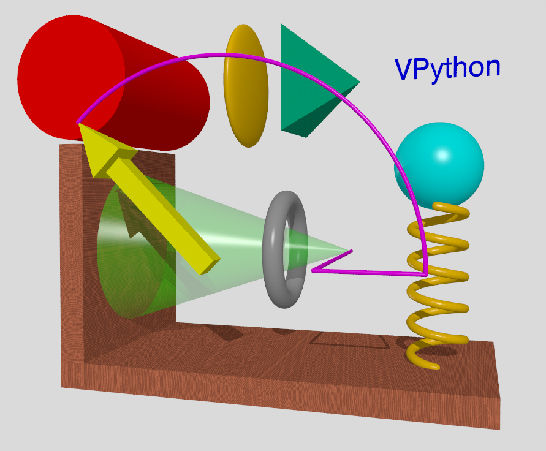

Frequently asked questions
Q: Using VPython on Windows System for Linux (WSL2)
A: Here are some instructions by John Coday for setting up and running VPython in a Jupyter Notebook on a Windows System for Linux (WSL 2) on a Windows 10 machine. This will be like having VPython running on a Linux machine and connecting to it from a browser from your Windows 10 machine.
Step 6) You should see the JupyterLab user interface appear in your browser. So you end up with the JupyterLab kernel running on the Linux Ubuntu virtual machine and you are connected to it from a browser running on your Windows 10 operating system.
Q: Running VPython on PyPY on a local machine
A:Here are some instructions by John Coady for running VPython on PyPy using Conda.
VPython should now work on jupyterlab using PyPy.
Q: Is there a way to import a 3D model created in a different application?
A: For converting 3D models in STL text format, download this zip file and unzip it. It includes the program convert_stl.py and two STL text format models. See the end of convert_stl.py for an example of how to use this module. Currently the program does not handle STL binary files, and it ignores color information. The progam does not attempt to assign texpos coordinates to the vertex objects, so one can't assign a texture in a meaningful way.
Q: Is there a way to generate POV-Ray source files automatically from a VPython program?
A: The povexport module exports a VPython scene to the free ray-tracing program POV-Ray, which produces much higher-quality images than is possible in real-time VPython animations, including the rendering of shadows. It was initially created by Ruth Chabay many years ago, and several others also contributed over the years: Markus Gritsch, Bruce Sherwood, Scott David Daniels, Guy Kloss, and John Denker.
Download this zip file and unzip it. It contains many VPython 7 examples and includes the povexport.py module (which includes comments on how to use the module) and a sample program povexport_example.py that uses the module. Objects not currently exported are compound, 3D text, extrusion, points, triangle, and quad. Here is what the POV-Ray application produces:

Note the shadow of the arrow on the cone and the generally very high quality of the image.
Q: Is there a way to capture VPython graphical output as a movie?
A: Do a web search for "screen movie capture" and you'll find many tools for the purpose, some of them at no cost. Here are some other suggestions:
As of November 2018 there is a way to do programmatic screen capture of .png images, which could be stitched together into a movie. From the documentation on canvases: c.capture(filename) sends to your Download folder a png screen shot of the canvas named c. If filename is the string "boxes" or "boxes.png" the file will be named "boxes.png". (Not yet available in VPython 7.)
Note however that most of the time it makes more sense just to post a URL to the GlowScript VPython program, because then it's interactive (rotate, zoom, pan).
Earlier comments from Ruth Chabay: I use a somewhat complex method to make large, high-quality movies from VPython animations, that can include sophisticated effects such as shadows, refraction, etc. It involves several steps.
1) Import the module “povexport” at the beginning of your program (see above FAQ on POV-Ray). At intervals, call povexport.export() to export the display as a PovRay scene description file. I put a counter in my program, and use it to name the exported files sequentially, e.g. “myanimation001.pov”, etc.
2) I use Pov-Ray, a very sophisticated free raytracer that runs on all platforms, to render all the files. This can be done in batch mode, using the Queue. POV-Ray provides a variety of output formats, such as targa and png. I choose the size of the output files to correspond to the size of the movie I want.
3) In the past I used targa files, which are large, and I converted them to jpg files using Photoshop, but it would probably be easier to do this with Python Image Library (PIL). POV-Ray does now output jpg files, but with warning that due to compression these is some loss in quality.
4) To assemble the numbered files into a movie, I used QuickTime Pro, but this no longer seems to be available, so look for other tools. I find that a frame rate of 10 frames per second works well for computer-generated movies. (Fewer frames/second is jerky; more frames/second may simply make the movie take up more disk space). You may have another favorite tool – I don’t recommend Premiere for this, because its orientation to actual video makes it difficult to produce something at a wildly different frame rate.
Michael Cobb produced a video of a very lengthy VPython computation by doing this: "On Windows the Python Imaging Library (PIL) has a grab image function that I used periodically to capture (screen dump) a pre-defined section of the screen and make a jpg. I then used Gimp to encode all the files (933 of them) together into an avi file. I wish the ImageGrab function worked on Ubuntu as computations are about 2-3 times faster than on Windows." This is adequate for his purposes, but of course lower quality than the raytraced images produced using PovRay. Details:
import Image # from PIL
import ImageGrab # from PIL
....
im = ImageGrab.grab((0,0,600,600)) # if window located at (0,0), width=height=600
im.save(filename.jpg) # where filename is incremented for each image
From Bruce Sherwood: Another option is to place the animation at glowscript.org, so that the program can be run interactively, including the ability to zoom, rotate, and pan the camera, with the possibility of adding widgets to control aspects of the animation. If your Python program imports modules other than VPython (numpy, for example), your VPython program can't run as is at glowscript.org, but your Python program could write out a text file that has lists of computed values used to update the display, and you add a loop to read this data and update the display. Just post the URL to run the program, like this:
https://www.glowscript.org/#/user/matterandinteractions/folder/matterandinteractions/program/18-SurfaceCharge
It may be, as is the case I've just given, that there's just too much data to put into the program itself. If you view my program you'll see that it starts by reading some large JavaScript files, like this:
get_library("http://matterandinteractions.org/glowscript/polarized_block_Nov2017.js")
I wrote a Python program that output the .js file, which looks like the following, containing the geometry and offline-computed surface charge distribution of an object, and placed the files on one of our web sites:
var polarized_block = {}
polarized_block.get_W = function () {return 0.000100}
polarized_block.get_source_locs = function() { return [
[-0.010000,0.000000,0.000000]
] }
polarized_block.get_source_charges = function() { return [
1.000000e-15
] }
polarized_block.get_qs = function() { return [
-3.410657e-20, -2.527477e-20, -2.302544e-20, -2.190150e-20, -2.121440e-20,
-2.075235e-20, -2.042405e-20, -2.018243e-20, -2.000035e-20, -1.986089e-20,
-1.975291e-20, -1.966874e-20, -1.960295e-20, -1.955160e-20, -1.951178e-20,
-1.948131e-20, -1.945862e-20, -1.944253e-20, -1.943222e-20, -1.942720e-20,
-1.942720e-20, -1.943222e-20, -1.944253e-20, -1.945862e-20, -1.948131e-20,
-1.951178e-20, -1.955160e-20, -1.960295e-20, -1.966874e-20, -1.975291e-20, etc.
In my GlowScript VPython program I read this data and enable you interactively to explore the electric field inside and outside the polarized metal or circuit. Because the VPython program is compiled to JavaScript, statements can read the elements of the polarized_block dictionary ("object literal" in JavaScript).
.